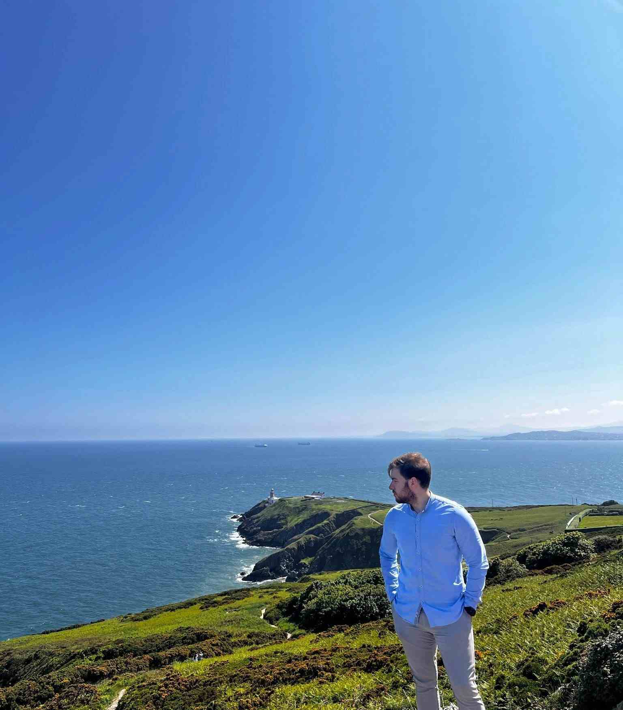

Abner Goncalves | WDD 130

Hello! My name is Abner Goncalves, and I am from Vitoria, Brasil. I enjoy going to the gym and playing soccer.
I am currently studying Software Development at BYU-I. I am excited to learn more about how programs work and how to create new programs which will help to automate tasks. I look forward to being able to develop my own programs and being able to apply them at work.